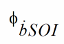

Model Concepts
The definition of the node potentials are:
Ves: substrate contact to source
The internal node potential is denoted by Vbs, which is equal to  for the floating body and to Vbcs for the body tie.
The divergence of model branches are summarized are shown in the figure below
Figure -1 Model Branches Considered in HiSIM_SOI
The dynamical-depletion condition during switching is also automatically done within the model framework. The impurity concentration difference between the SOI layer NSUBS and the substrate NSUBB determines the built-in potential difference, which is also considered.
Figure -2 Definitions of device parameters in HiSIM SOI.
The y-axis is defined along the direction of current flow (source is y=0) and x is defined downwards into the channel (front gate MOS interface is x=0).
If TBOX is so thin that the inversion condition occurs even on the backside at BOX, HiSIM SOTB is recommended to apply. HiSIM SOI solves the Poisson equation iteratively from the surface to the bulk substrate [1–3]. The surface potential value, the solution of the Poisson equation, determines the device condition either fully depleted (FD) or partially depleted (PD).
Return to top